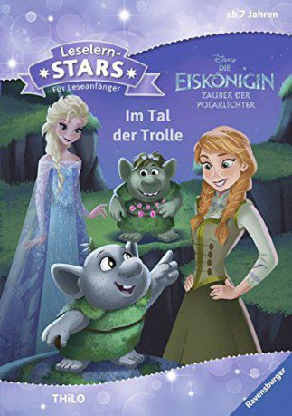

#5439 Die Eiskönigin - Zauber der Polarlichter
 gesehen am 31.01.2017
gesehen am 31.01.2017
 
 IMDB-Wertung: 0.0 / 10
IMDB-Wertung: 0.0 / 10  Metascore: 0
Metascore: 0 
V-Spin-Off zum massiv erfolgreichen Disneyfilm „Die Eiskönigin – Völlig unverfroren“, diesmal im LEGO-Look: Als über dem Königreich Arendelle die alljährlichen Polarlichter auf einmal verschwinden, machen sich die royalen Schwestern Anna und Elsa mit ihrer bunten Schar Freunde auf die Suche nach ihnen …
Jahr: 2016
Dauer: 20 Minuten
FSK: 0
Land: Studio: Tonspuren:
Untertitel:
Auflösung: 1080p (1920x1080) Größe: 709 MB
Genre: Animation/Trick
Regisseur:
Drehbuch:
Soundtrack:
Darsteller:
Datei: X:\Kinder Disney HD\Eiskönigin\Eiskönigin - Zauber der Polarlichter, Die (2016, FSK0, 1920x1080).mkv seit 31.01.2017
Festplatte: Kinder-Filme+Trick
 Es gibt insgesamt 9 Filme in der Gruppe 'Kinder Disney HD\Eiskönigin'
Es gibt insgesamt 9 Filme in der Gruppe 'Kinder Disney HD\Eiskönigin'